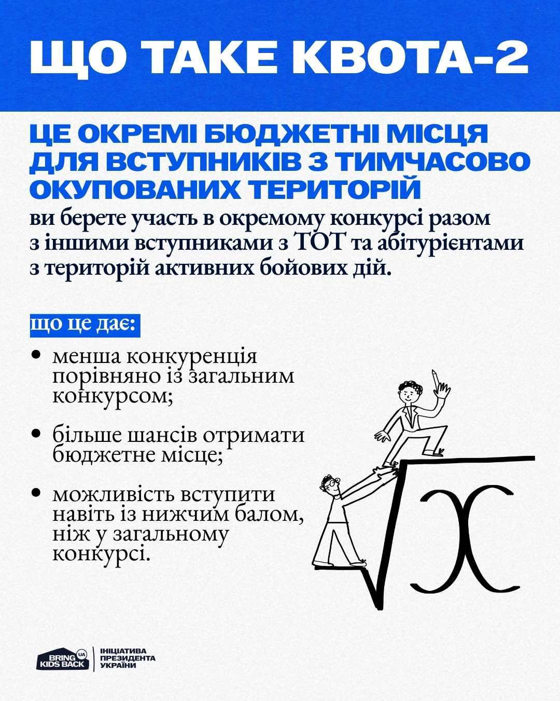
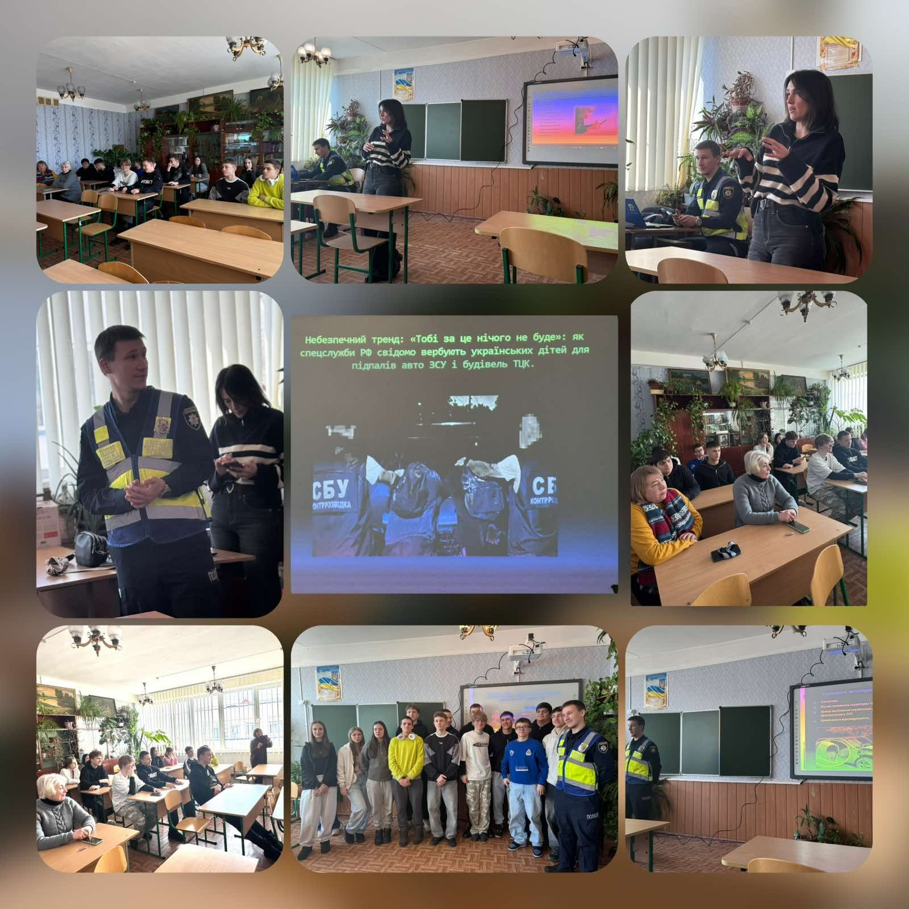
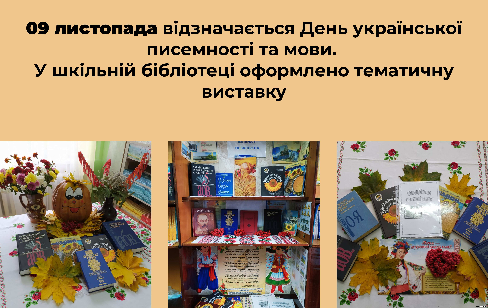

Вступ до ліцею
Умови, перелік документів, форми навчання
Перейти до розділуОфіційний сайт
Серйозний, зручний і сучасний простір офіційної інформації: від вступу та документів — до новин, педагогічного складу і сторінок безпечного освітнього середовища.
Оновлений сайт ліцею створено як зручний навігатор для учнів, батьків та педагогів. Тут зібрано основну інформацію про заклад, актуальні документи, новини, сторінки безпеки, поради психологічної служби, дані про вступ та корисні матеріали для підготовки до НМТ.
Умови, перелік документів, форми навчання
Перейти до розділуАдміністрація, методичні обʼєднання, класні керівники
Перейти до розділуСтатут, освітні програми, звіти, кошториси, накази
Перейти до розділуПідготовка, корисні матеріали, актуальні посилання
Перейти до розділуПоради, памʼятки, інструкції, куди звертатися
Перейти до розділуДумки батьків та учнів, форма для зворотного зв’язку
Перейти до розділу
Оновили добірку матеріалів для підготовки, короткі пояснення щодо структури тестування та перелік корисних офіційних ресурсів.
Читати далі →
У ліцеї відбулася важлива зустріч щодо інформаційної безпеки, ризикованої поведінки в мережі та відповідального ставлення до власної безпеки.
Читати далі →
Бібліотека ліцею продовжує творити простір читання, пам’яті та натхнення через книжкові виставки й тематичні полиці.
Читати далі →Ліцей пропонує різні форми здобуття освіти: дистанційну, заочну, вечірню (змінну), екстернатну та педагогічний патронаж. На сторінці вступу зібрано вимоги, перелік документів та ключові пояснення для майбутніх здобувачів освіти.

Окрема сторінка з відгуками, рейтингом та формою для нових повідомлень.
Відкрити сторінку відгуків →Сторінка реєстрації та входу для майбутнього розширення можливостей сайту.
Перейти в кабінет →На новинних сторінках працює локальна система коментарів для зручного прототипування функцій спільноти.
Дивитися новини →